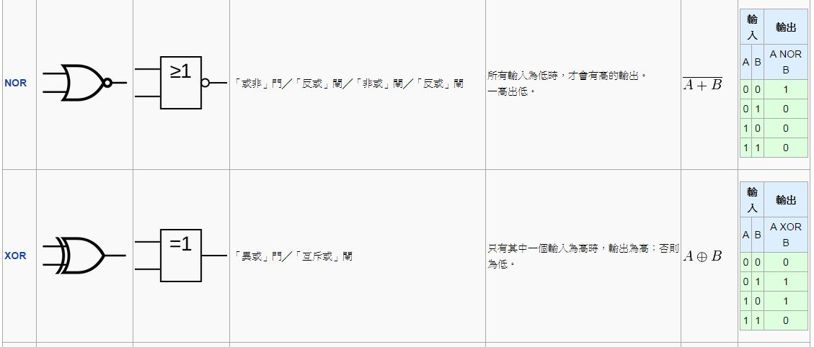
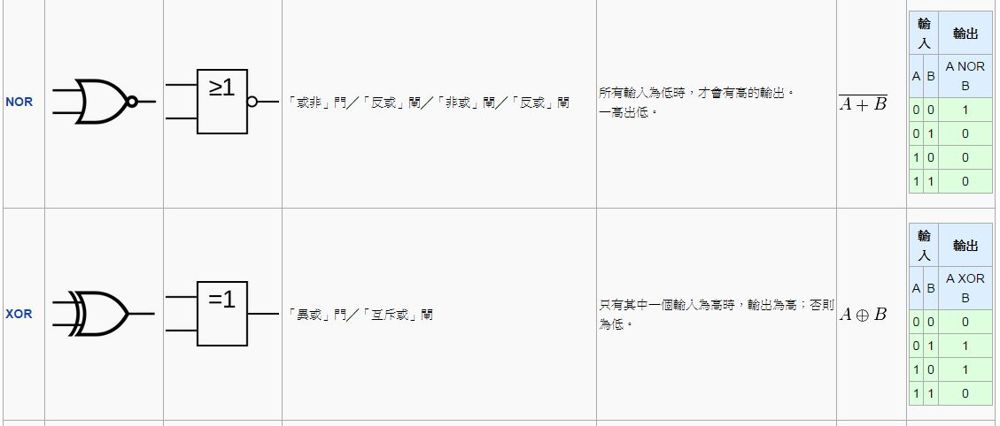

前言
編輯小語
2014 年 9 月，我家小兒子開始在家自學，這讓我苦於沒有一個好的教材可以教他。於是我想，既然我可以自己辦「程式人雜誌」，那又為甚麼不能辦一個雜誌，讓有興趣的青少年、甚至是兒童都可以透過這個雜誌學會「電腦、程式、科學原理、機器人」等等「科學與工業技術」呢？
於是、「少年科技人」雜誌就誕生了！
---- （「少年科技人」雜誌編輯 - 陳鍾誠）
授權聲明
本雜誌許多資料修改自維基百科，採用 創作共用：姓名標示、相同方式分享 授權，若您想要修改本書產生衍生著作時，至少應該遵守下列授權條件：
- 標示原作者姓名 (包含該文章作者，若有來自維基百科的部份也請一併標示)。
- 採用 創作共用：姓名標示、相同方式分享 的方式公開衍生著作。
另外、當本雜誌中有文章或素材並非採用 姓名標示、相同方式分享 時，將會在該文章或素材後面標示其授權，此時該文章將以該標示的方式授權釋出，請修改者注意這些授權標示，以避免產生侵權糾紛。
例如有些文章可能不希望被作為「商業性使用」，此時就可能會採用創作共用：[姓名標示、非商業性、相同方式分享] 的授權，此時您就不應當將該文章用於商業用途上。
最後、懇請勿移除公益捐贈的相關描述，以便讓愛心得以持續散播！
本期焦點：電腦的歷史、工業與結構
電腦演進的歷史
雖然有些教科書上會寫說「第一台電腦是 1941 年美國的 ENIAC」，但這種說法似乎太過簡化了！
很多故事，每個國家都有不同的版本。對於電腦，也是如此！
例如、有人會說中國人的算盤，也是一種電腦。但是、這種電腦不用電。
事實上、英文的電腦裏並沒有電這個字，Computer 是指一台可以用來計算的機器。與 Calculator 幾乎是同意詞。
1633年，英國牧師奧特雷德利用對數基礎，發明出一種圓形計算工具比例環（Circles of Proportion），後來逐漸演變成近代熟悉的計算尺。直到口袋型計算器發明之前，有一整個世代的工程師，以及跟數學沾上邊的專業人士都使用過計算尺。美國阿波羅計劃裡的工程師甚至利用計算尺就將人類送上了月球，其精確度達到3或4位的有效數位。

1623年，德國科學家施卡德建造出第一部機械式計算器，這部機械改良自時鐘的齒輪技術，能進行六位數的加減，並經由鐘聲輸出答案，因此又稱為「算數鐘」，可惜後來毀於火災，施卡德也因戰禍而逝。
1642年法國數學家巴斯卡為稅務所苦的稅務員父親發明了滾輪式加法器2，可透過轉盤進行加法運算。1673年德國數學家萊布尼茨使用階梯式圓柱齒輪加以改良，製作出可以四則運算的步進計算器，可惜成本高昂，不受當代重視。

1820年之後，機械式計算器開始廣為使用。法國人湯瑪斯以萊布尼茨的設計為基礎，率先成功量產可作四則運算的機械式計算器，後來命名為湯瑪斯計算器（Thomas Arithmometer），此後機械式計算器風行草偃，直到1970年代的150年間，有十進位的加法機、康普托計算器、門羅計算器以及科塔計算器等相繼面市。萊布尼茨還倡導過現代電腦的核心理論──二進位系統，不過直到1940年代（從1800年代的巴貝奇，到1946年誕生的ENIAC），大部分的設計連小數點都未能兼顧。
1725年，法國紡織工人魯修為便於轉織圖樣，在織布機套上穿孔紙帶，他的合作夥伴則在1726年著手改良設計，將紙帶換成相互串連的穿孔卡片，以此達到僅需手工進料的半自動化生產。1801年，法國人雅卡爾發明提花織布機，利用打孔卡控制織花圖樣，與前者不同的是，這部織布機變更連串的卡片時，無需更動機械設計，此乃可程式化機器的里程碑。
美國憲法規定每十年必須進行一次人口普查，1880年排山倒海的普查資料就花費了8年時間處理分析，因此美國統計學家赫爾曼·何樂禮 (Herman Hollerith) 在1890年開發出一種排序機，利用打孔卡儲存資料，再由機器感測卡片，協助美國人口調查局對統計資料進行自動化製表，結果不出3年就完成戶口普查工作。
圖、Hollerith與打孔卡
1823年，英國數學家巴貝奇在政府的支持下，開始建造以蒸汽引擎驅動的差分機，用來比較數字間的差異，經歷10年未能竟功，巴貝奇遂轉而研究設計得更為完整，直接利用打孔卡輸入和儲存資料的分析機，可惜最後巴貝奇窮其畢生精力都未能造出任一完整的差分機或分析機。

圖、巴貝奇與倫敦科學博物館重建的差分機
英國著名詩人拜倫之女愛達 (ADA) 為分析機的打孔卡安排指令順序，也就是寫程式，因此被認為是世界第一位程式設計師。
電力機械時代
1900年代初期，機械式計算器、收銀機、記帳機等都被重新設計，改用電動馬達，配合變檔齒輪使其更加靈活。
真空管的發明
真空管的歷史可溯自燈泡的發明人湯瑪斯·愛迪生。1880年某日，他好奇地在燈泡中多放了一個電極，且灑了點箔片，結果發現了奇特的現象：第三極通正電時，箔片毫無反應；但通負電時，箔片隨即翻騰漂浮。當時愛迪生不知道此現象的起由，但由於他不經意的發現，這個現象後來被稱為愛迪生效應。一直到1901年，歐文·理查森提出定律，說明電子的激發態引起箔片漂浮，後更以此拿到1928年的諾貝爾物理獎。接著約翰·弗萊明在1904年發展出二極管，李·德佛瑞斯特（Lee De Forest）更在1907年作出第一個三極管。
真空管有燈泡般大小，早期的電腦是採用真空管做為基本元件，因此電腦通常很大，通常會佔滿一整個房間，而且功能不強。
二次大戰時期：德國楚澤 Z 系列電腦
1936年，在德國獨力研發的楚澤 (Konrad Zuse) ，開始打造以記憶能力和可程式化為特色的Z系列計算器。1938年，楚澤在柏林父親的公寓中完成Z1電腦，完全機械製造，使用二進位制，但是由於部分零件精確度的問題，運作並不穩定。
楚澤後續機種 Z3 電腦完成於 1941 年，使用打孔膠捲作為輸入程式的媒介，以電話型繼電器為基礎，運作順利，因此成為首部可程式控制的功能性電腦。Z3 電腦在許多方面都跟現代電腦相當類似，比如說使用了浮點數，是多項先進功能中的先鋒。
Z3 電腦在許多方面都跟現代電腦相當類似，比如說使用了浮點數，是多項先進功能中的先鋒。楚澤揚棄不好用的十進位制（巴貝奇早期設計皆使用十進位制）取簡單的二進位制，以當時的科技工藝來說，此舉使得他的機種易於製造，較為可靠，也有人認為這是楚澤比巴貝奇成功的主要原因之一。Z3電腦雖然被人忽略，不過已在 1990 年代證實合乎通用電腦定義（忽略其物理儲存容量限制）。
楚澤在1936年提出兩項發明專利，並且預言記憶儲存裝置將可同時儲存電腦指令和資料，這項遠見後來發展出范紐曼型架構，1949年為英國EDSAC電腦所應用。楚澤也主張第一款電腦高階程式語言是他所設計（Plankalkül，1945年完成，1948年發表），雖然這款程式語言直到2000年才在柏林自由大學首度成功執行──當時楚澤已經過世5年。
二次大戰時期，楚澤的部分發明遭到盟軍轟炸，摧毀殆盡。直到很久以後，英美工程師對他的發明仍有大片未知，IBM認識到這點，因此資助楚澤在戰後成立的公司，作為使用楚澤專利的交換。
二次大戰時期：美國的電腦發展
1939年，愛荷華州立大學的約翰·阿塔納索夫 (John Vincent Atanasoff) 和克里夫·貝理 (Clifford E. Berry) 開發出阿塔纳索夫貝理電腦（ABC Computer），用以解決線性方程式的問題。ABC使用超過 300 個真空管提高運算速度，以固定在機械旋轉磁鼓上的電容器作為記憶裝置，雖然不可程式化，但是採用二進位制和電子線路。
1939年，馬克一號在IBM安迪卡特（Endicott）實驗室起手開發，參考巴貝奇分析機，使用十進位制、轉輪式儲存器、旋轉式開關以及電磁繼電器，由數個計算單元平行控制，經由打孔紙帶進行程式化。
1943年開始建造的美國 ENIAC （Electronic Numerical Integrator And Computer, 電子數值積分計算器）是一部廣為人知的電腦，完工於 1945 年。很多教科書介紹電腦歷史都是從 ENIAC 開始的。
ENIAC是符合圖靈完全的裝置，「程式」對ENIAC來說，是一段電子程式儲存器到主機的距離，之間是由電纜和開關拼湊連接出來的運作狀態，不過在當時，光是能夠獨立運算這點，就已被認為是一大勝利。
約翰·馮紐曼曾經參與 ENIAC 專案，後來寫了一份《EDVAC報告書的第一份草案》（英語：First Draft of a Report on the EDVAC），該草案中提出了一個後來廣為人知的《馮紐曼架構》（von Neumann architecture）。
後來在 1948年，曼徹斯特大學根據馮紐曼架構建立了一台小規模實驗型電腦，稱為 Baby。
圖、英國曼徹斯特科學工業博物館的 Baby 是第一部馮紐曼架構的電腦
接著在1949年，曼徹斯特馬克一號電腦 (Manchester Mark I) 登場，功能完整，以威廉管和磁鼓作為記憶體媒介，並且引進索引暫存器的功能。
民用計算器
1948年，科塔計算器面市，這款機械式計算器造型輕便小巧，大小約莫有如一個胡椒粉研磨器。之後整個1950年代到1960年代，各種品牌相繼面市，爭奇鬥艷，好不熱鬧。

電晶體的發明
1947年「貝爾實驗室」的約翰·巴丁 (John Bardeen) 、沃爾特·布喇頓(Walter Brattain) 和威廉·肖克利 (William Shockley) 發明了電晶體，這些電晶體可以用來取代真空管的功能，但是體積小了很多。
圖、電晶體的三位發明人
巴丁、布喇頓兩人發明的稱為三極體；而肖克利發明的稱為 PN 二極體。
「電晶體」是利用參了不同雜質的矽所製作出來的電子控制元件，而這種摻有雜質的矽，具有「某些情況下導通，某些情況下斷路」的特性，因此這些「摻有雜質矽材質」又稱為「半導體」。 (Semiconductor)。
圖、電晶體的符號與原理
1955年，肖克利在加州山景城創立了「肖克利實驗室股份有限公司」，聘用了很多年輕優秀的人才。但很快肖克利個人的管理方法因其公司內部不合，八名主要員工（後來被稱為八大叛徒）於1957年集體跳槽成立了仙童半導體公司，開發了第一塊「積體電路」 (IC, 就是台積電代工生產的那種)。而肖克利實驗室則每況愈下，兩次被轉賣後於1968年永久關閉。
「積體電路」是將「電阻、電容、電感、電晶體」等元件通通做在一塊矽基版上的「整合型矽晶片電路」(Integrated circuit, IC），這種技術大大縮小了電腦的大小，這也是為何後來電腦可以搬到桌上，甚至成為「手機或平版」隨身攜帶的主要原因了。

圖、積體電路的外型與內部呈現
桌上型電腦
後來、當電腦可以縮小到放在桌上，電腦就開始進入家庭裏面，成為一種家電用品。
1977 年，賈伯斯 (Steve Jobs) 和沃茲尼克 (Stephen Gary Wozniak) 等人所成立的蘋果電腦 (Apple)，成功的生產出「蘋果二號」(Apple II) 這台電腦並打入家庭，於是開啟了「家用個人電腦」的時代。
當蘋果成功打入家用電腦市場之後，引發了商用電腦巨人 IBM 也想進入這個市場。但是 IBM 這個大公司的行動通常很緩慢，研發設計一款電腦需要四到五年的時間。
為了快速進入家用電腦市場，IBM決定破例設定一個特別小組。這個小組被授命繞過公司的規則來快速地提供一個市場產品。這個計畫的代號叫做「象棋計畫」（Project Chess）。
這個在「唐·埃斯特利奇」領導下的12人小組用了約一年的時間研製出了IBM PC。為了達到這個目的他們首先決定使用現成的、不同原始裝置製造商的元件。這個做法與IBM過去始終研製自己的元件的做法相反。其次他們決定使用開放結構，這樣其它生產商可以生產和出售相容的元件和軟體。IBM還出售其《IBM PC技術參考資料》，這份資料中包括一段 ROM BIOS原始碼。
結果、其它生產商很快就逆向分析了 BIOS 的程式，發展了其自己的、不侵犯版權的拷貝。1982年6月哥倫比亞資料產品公司（Columbia Data Products）推出了第一台IBM PC相容機。1982年11月康柏電腦宣布發展出第一台IBM PC相容的可攜式電腦Compaq Portable（1983年3月出產）。
IBM 釋出的這段 BIOS 可以說是影響深遠，BIOS 將電腦硬體與軟體整個切開，讓硬體與軟體兩者可以輕易的由不同的廠商設計生產。於是整個個人電腦產業不再由單一公司主導，而是由全世界很多公司分別設計製造其中一小部份，最後才組裝成一台電腦的。

不過、IBM 所料想不到的事情發生了，PC 架構釋出之後，微軟搶到「作業系統」，Intel 搶到「處理器」，而台灣則搶到「週邊設備、主機板與整台電腦的組裝」，形成了 「Microsoft + Intel + Taiwan」的 MIT 三股勢力，並且不斷的壯大。
這股勢力不只打垮了蘋果，還反過來幾乎摧毀了 IBM 的大電腦產業，導致這兩家公司逐漸衰弱。
雖然、蘋果搶先推出了「視窗型的電腦」LISA 與麥金塔，但是銷售卻不是很好，於是 1985 年時「賈伯斯」因此被自己創辦的蘋果電腦給開除，落寞了一陣子，但是後來又重新振作起來。接著創辦了 NeXT 電腦公司並投資創立「皮克斯」動畫公司。
後來、在 1997 年蘋果又找賈伯斯回來重掌大權，而賈伯斯確實也不負所望，透過 iPod、iPhone、iPad 等一系列產品，再度成為電腦領域的傳奇人物。

圖、賈伯斯與他的電腦們
參考文獻
【本文由陳鍾誠取材並修改自 維基百科，採用創作共用的 姓名標示、相同方式分享 授權】
透視電腦的內部結構
電腦看起來很複雜，實際上呢？也真的是很複雜啦！
但是這些複雜的原因，通常是為了要「讓電腦跑得很快」，假如我們重新設計一台電腦，完全不考慮速度問題的話，其實是可以不要那麼複雜的。
在本文中，我們將透過真實的電腦圖片，瞭解電腦的外觀，然後再透過數位電路圖，逐步深入電腦的內部，讓讀者能理解電腦的基本架構。
主機板
如果你將電腦的機殼拆開，會看到一大塊的板子，很多元件都焊接在上面，那塊板子就稱為主機板。

圖、LGA 1366主機板包含南橋和北橋，後來的主機板僅有南橋，北橋已整合到CPU
處理器
然後、你可能會注意到裏面有一塊比較大的方型晶片，那塊通常是「中央處理器」。

處理器內部
當然、由於處理器封裝成一顆「黑黑的 IC 晶片」，所以我們看不到處理器的內部，就算沒封裝起來，我們也看不出這些密密麻麻的線路到底代表甚麼意義。

抽象架構
但是、抽象來看，電腦通常採用下列的「馮紐曼架構」，或者其變形後的「哈佛架構」。
圖、單匯流排的馮紐曼架構
細部元件
而處理器的內部，是由一種稱為「邏輯閘」的基礎元件所組成的，以下是一些常見的基本邏輯閘。

 
 
其實、只要用 AND (及閘), OR (或閘), NOT (反閘) 就可以組成所有「數位電路」了，其他元件都可以由這三種閘所組成。
甚至、我們只要用一種 NAND (反及閘)，就可以組出所有「數位電路」了，因為 NAND 可以組合出 AND, OR, NOT 閘。
您可以試試看用 NAND 閘來組合出 AND、OR、NOT ，這會是一個很好的練習題。
接下來呢？
當然、要將「中央處理器」分解到「閘」的層次，需要一些「理論與實務工具」，這將會是我們下期所要介紹的主題，我們下期見！
參考文獻
【本文由陳鍾誠取材並修改自 維基百科，採用創作共用的 姓名標示、相同方式分享 授權】
電腦工業的結構
在上文中，我們看到了「電腦的內部結構」，接著讓我們來看看整個電腦產業，是怎麼將一台電腦生產出來的。
但是、現代電腦已經不止是桌上擺的那種「個人電腦」，包含 iPad、手機、甚至汽車內部、微波爐等各種電子裝置裏，通常都存在著「電腦」，或者說「處理器」。
因此、本文所說的電腦產業，也包含這些看起來不像電腦的產業。
IC 晶片產業
IC 是由晶圓加工切割後所製成的產品，而晶圓是矽沙(也就是沙子裏大量存在的那種透明小顆粒) 不斷提煉，經過長晶的程序，得到的超高純度矽晶柱。這種晶柱經過切割成薄片之後，就是矽晶圓了。

矽的純度越高，IC 生產的良率 (良好比率) 就會越高，因此晶圓廠裏要盡可能的保持純淨，避免任何的灰塵進入，所以除了盡可能的用「機器自動化」來完成生產任務之外，要進入晶圓廠的無塵室之前，一定要先穿上類似太空裝的隔離衣，避免你身上的灰塵或分泌物「感染」無塵室，降低 IC 生產的良率。
但是、可想而知的，當你好不容易花了十幾分鐘穿上那一身太空裝進到無塵室，突然想要尿尿的時候該怎麼辦呢？ (關於這個問題，可以請教「幫寶適」或「包大人」公司，應該就會有解答了！O My God，可憐的晶圓廠工程師啊 ....)
關於晶圓 IC 的生產過程，建議讀者可以看看下列的 PDF 文件，文件中說明得蠻清楚的。
IC 是積體電路 (Integrated circuit) 的簡稱，也就是將一大堆電晶體放入一塊矽晶片上，經過摻入特定雜質形成電路，接著加上接腳並封裝之後，就形成了我們今日看到的 IC 晶片。

上述的矽晶圓是整個電腦產業的基礎材料，而 IC 則是最重要的核心元件。
目前、世界上生產晶片最多的前三大公司，是生產處理器的英特爾 (Intel)、南韓的三星電子 (Samsung)、與台灣專門做晶圓代工的台積電公司 (TSMC)。
IC 的生產是一個「超極資本密集產業」，要建立一個 12 吋晶圓的生產工廠，必須耗費將近一千億的資金。所以、千萬不要想在家裏自己生產 IC。
(我記得有某個晶圓廠大亨說過，每個男人的生命中都應該有一座晶圓廠 ....)
(如果這句話成立的話，那我應該就不算是男人了 ....)
PCB 電路板產業
除了 IC 以外，在電腦裏佔用最大空間的通常是「印刷電路板」(Printed circuit board, PCB)，電路板的功能其實是將上面的各種元件，像是 「IC、電容、電感、電阻、與各種週邊裝置插槽」等，用印刷的銅線路連接起來的一種板子。

電路板所扮演的角色，其實就是馮紐曼架構裏的「匯流排」(BUS)，這些匯流排線路有些傳遞「資料訊息」、有些傳遞「位址訊息」，另外還有些傳遞「控制訊息」。
除了主機板之外，很多週邊裝置裏也都含有電路板。舉例而言，以下是一隻滑鼠裏面的電路板，其中 SW3 上接一個開關，C3 上接一個電容，Q1 上接一個電晶體，而 R7 上則是接了一個電阻。
其實、除了工廠可以生產電路板之外，您也可以在家裡用「手洗」的方式「自製電路板」，像是以下的電路板就是用「手洗」的，而且線路並沒有很整齊。

當然、所謂的手洗並不是真正「用手去洗」，因為這些電路板的洗劑都是有毒性的，因此「手洗」時務必戴上防護手套，然後將線路畫在透明投影片上，然後用投影片去黏在一張完整蓋滿銅箔的電路板上去曝光，讓電路被光線固定後，最後再用洗劑將沒被固定的銅箔洗掉，就可以完成一張電路板了。
另外、如果有雕刻機等設備，也可以直接設計好線路後，交由電腦控制雕刻機將不要的銅箔刻掉，只留下線路的部分，這樣就可以「刻出電路板」了。
當然、工廠所使用的設備高級許多，所以生產起來會比自己洗快上很多，品質也會好很多。
台灣有很多廠商會生產電路板，也有很多人會設計電路板，設計電路板時會採用「設計電路板」的軟體，像是 Altium Designer、Eagle 或 KiCAD 等軟體來設計，只要把元件排好之後，這些軟體甚至可以自動幫你產生線路布局，而不需要你自己用手去畫，以下是 KiCAD 軟體所設計的一塊電路板圖形。
產業供應鏈
從整個產業的角度來看，我們可以看到下列流程，這個流程主要分成兩部份，一部分是 IC 晶片產業，另一部分是 PCB 電路板產業，兩者匯流後就形成了電腦產業的主要架構。
對於 IC 的製造，更詳細的流程如下所示：
前段製程：晶柱生長 => 切割成晶圓 => (成膜 => 微影成像 => 蝕刻 => 雜質參雜 => CMP 平坦化)* => 晶圓電路檢查
後段製程：背部研磨 => 切割 => 黏晶 => 引線接合 => 塑膜封裝 (壓模) => 導線金屬鍍膜 => 導線加工 => 標印 => 電路檢查 => 預燒 => 電路檢查 => 入庫檢查 => 入庫 => 出貨
當然、以上只是大致的產業架構，而且所列出的主要是台灣的廠商。但是、我想應該足以描述出整個電腦產業的基本架構了。
參考文獻
【本文由陳鍾誠取材並修改自 維基百科，採用創作共用的 姓名標示、相同方式分享 授權】
科技人小故事
與大師相遇 : 馮紐曼

在近代的科學史裏面，馮紐曼 (John von Neumann) 是位很難描述的大師。
「馮紐曼」之所以難描述，是因為他一生投入的研究領域太多，而且都有非常知名的成果。
這些成果列舉如下：
- 1932年量子力學教科書《量子力學的數學基礎》首次以數理分析清晰地提出了波函數的兩類演化過程。
- 1944年與 Oskar Morgenstern 合著《博弈論與經濟行為》，創建了經濟學與數學上著名的博弈論。
- 1945年6月在 EDVAC報告書的第一份草案 中提出了電腦的馮紐曼架構。
- 1944-1945 參與開發原子彈的「曼哈頓計畫」，設計「內爆透鏡」並計算出「如何發揮核彈的最大威力」的方法。
另外「馮紐曼」還在「集合論、測度論、量子邏輯、數理經濟學、線性規劃、數理統計、流體力學、細胞自動機」等領域有過重要的貢獻，涉略領域之廣，令人嘆為觀止。
如果您對「馮紐曼」的生平有興趣的話，可以參考下列的幾分參考文獻。
參考文獻
科學原理
真空管的原理
現代的電腦很小，因為採用的電子材料是以矽晶片為材質的半導體，晶圓廠可以把很多電子元件通通做在一片 IC 矽晶片上，因此我們的手機或 iPad 等「攜帶型電腦」才能做得那麼小。
但是、在半導體之前，電腦所採用的主要元件是「真空管」，「真空管」就像燈泡一樣大，因此做出來的電腦，當然也是又大又笨重。
不過、雖然如此，對歷史好奇的「科技人」，還是會希望瞭解一下真空管的運作原理，本文將會介紹「真空管的運作原理」。
話說《愛迪生》(Thomas Alva Edison) 在 1880年的某日，他好奇地在燈泡中多放了一個電極，且灑了點箔片，結果發現了奇特的現象：第三極通正電時，箔片毫無反應；但通負電時，箔片隨即翻騰漂浮。當時愛迪生不知道此現象的起由，但由於他不經意的發現，這個現象後來被稱為愛迪生效應。
到了 1901 年，《歐文·理查森》 (Owen Richardson) 提出定律，說明電子的激發態引起箔片漂浮，後更以此拿到1928年的諾貝爾物理獎。接著《約翰·弗萊明》 (John Fleming) 在1904年發展出二極管，《李·德佛瑞斯特》（Lee De Forest）更在1907年作出第一個三極管。
真空管可以分為「二極管」與「三極管」兩種，二極管的運作原理如下圖所示：

但是、二極管是否導通全看電壓的大小，因此並不適合用來做為電腦的基本元件，因為缺乏控制極。
三極管解決了這個問題，以下是三極管的基本結構圖。

在三極管的結構中，只要能恰當的控制柵極的電壓，就能決定該真空管是否導通，這種結構和後來的半導體原理幾乎相同，只是所需的電壓通常較大而已。
有了上述的三極管，我們就可以做出電腦的最基本的 NAND 元件，然後就能利用這樣的元件組合出千變萬化的數位電路。
至於怎麼樣用 NAND 元件做出數位電路，還有怎麼用 NAND 元件做出處理器，則又是一個很長的故事，且讓我們先賣個關子，在下期的「少年科技人」雜誌再來探討了。
參考文獻
半導體的原理
處理器、電晶體、記憶體、與各種 IC 晶片都是由以矽為基礎材質的半導體所組成的，矽材質經過參雜五價元素 (砷、磷、銻、...) 後變成 N 型矽，如果參雜三價元素 (硼、鋁、鎵、銦...) 則會變成 P 型矽。
只要適當的安排這兩種不同類型的雜質的位置，就能形成我們所想要的電路。
現今的 IC 裏面，通常包含了數千萬個基本電路，但這些電路都是從一種稱為電晶體的基本元件所衍生而來的，因此要瞭解半導體，就必須先理解電晶體。
電晶體有兩種類型，第一種稱為「雙極性電晶體」（BJT），第二種稱為「場效電晶體」（FET），這兩種電晶體的結構與原理稍有不同。以下是一些電晶體的外觀樣式。
電晶體一般都有三個極，其中一極做為控制用，而其餘兩個則用作輸入和輸出。
「雙極性電晶體」(BJT) 可分為 NPN 型與 PNP 型，以下是一個 NPN 型的「雙極性電晶體」示意圖。
您可以看到在 NPN 型電晶體中，如果 B 極帶負電，那麼由於 NP 與 PN 之間的阻抗，使得電流將被卡住無法流過。但是若是 B 極帶正電，此時 NP 與 PN 介面中的正負電融合，引發電流流動，就會造成電子流由 E 流向 C 極，也就是電流由 C 流向 E 極。
雙極性電晶體也可以設計為受到光照射時導通，因為基極吸收光子會產生光電流，這類的電晶體一般會在封裝上有一透明窗，稱為「光電晶體」。這種光電晶體是「太陽能發電板」的主要材料，所以太陽能發電板的材料與 IC 基本上是相同的。 (這也是為何台積電會擁有很多太陽能發電方面專利的原因)。
但是、「雙極性電晶體」在 IC 製程上比較不方便，比較難用。因此現在用來製造 IC 的主流並非「雙極性電晶體」，而是以下所要介紹的「場效電晶體」。
以下是一個「場效電晶體」的示意圖，您可以看到「場效電晶體」與「雙極性電晶體」有所不同，基本上下圖中的「場效電晶體」是建構在 P 型基板上，然後摻入一些 N 型雜質後形成一塊一塊的 N 型區域。

在上述結構中，假如我們讓閘極 (Gate) 帶有正電，那麼兩個 N 型區中間所夾的 P 型區將會因為正電的吸引而帶有負電，這些負電與 N 型區的負電會相互排斥，因而讓電子無法通過，導致斷路的狀態。

但是如果我們讓閘極 (Gate) 帶有負電，那麼兩個 N 型區中間所夾的 P 型區將會因為負電的吸引而帶有正電，這些正電 (電洞) 將會與 N 型區的負電 (電子) 會相互吸引並融合，因而讓電子得以通過，形成通路狀態。
仔細觀察上述的運作原理，您會發現「場效電晶體」的運作與「雙極性電晶體」類似，但是又稍有不同。
當然、當我們在設計電路時，不會用上述的原理圖，而是會用符號代表電晶體，以下是電晶體符號的畫法。

目前電晶體的主流是採用一種稱為「金氧半場效電晶體」 (Metal-Oxide-Semiconductor Field-Effect Transistor, MOSFET）的技術，採用這個名稱的原因是因為其中包含一層氧化層，而閘極上可能會採用金屬作為材質 (但不一定要用金屬)。

當上述 MOSFET 「刻好電路」之後，就會形成下列的結構，這種結構是形成當今 IC 電路的主要結構。
如果要在電路圖中強調是 MOSFET 的話，可以採用下列的電路符號。

如果我們將兩組互補性的 MOSFET 組合在一起，可以做出一種非常省電的電路，稱為 CMOS (互補式金屬氧化物半導體, Complementary Metal-Oxide-Semiconductor)。

CMOS 雖然耗費了比較多的閘，但是非常的省電又不容易發熱，因此廣泛被用在「製作微處理器、 微控制器、靜態隨機存取記憶體以及互補式金屬氧化物半導體圖像感測器與其他數位邏輯電路」上，所以 CMOS 在半導體產業上佔有非常重要的地位。
當然、這些符號只是在設計時使用而已，真正的 IC 應該是長得像下面這些圖一樣，而不是一種符號而已。
參考文獻
科技人專欄
HTML 網頁設計 (作者：陳鍾誠)
HTML、CSS 與 JavaScript
HTML、CSS 與 JavaScript 是讓 Web Browser 運作的三大技術，要學會 Web 程式設計的第一步，就是要學會這三項技術，在本文中，我們將從最基礎的 HTML 開始。
如果您想要學習這些技術，筆者強烈的推薦您觀看 w3schools 這個網站，網址如下。
學習 HTML、CSS、JavaScript 的順序，最好先從 HTML 開始，因為 HTML 最簡單，而且是整個 Web 技術的表現語言，學會 HTML 之後就可以學習 CSS，看看如何對 HTML 進行格式化套表呈現的動作，然後再進一步學習 JavaScript 這個小型程式語言，以便讓網頁更加動態，增強網頁的的互動功能。
以下是 w3schools 當中這三個主題的網頁，如果您是一個程式設計師，相信您可以用很短的時間就學會這些主題。
- http://www.w3schools.com/html/default.asp
- http://www.w3schools.com/css/default.asp
- http://www.w3schools.com/js/default.asp
一但學會了 HTML、CSS、JavaScript 這三種技術，您就可以開始向 Server 端的技術邁進了。
簡易網頁
HTML 網頁是一種純文字檔案，您只要用記事本這樣的文字編輯器就可以輕易的編出來，以下是一個範例：
<html>
<body>
Hello!
</body>
</html>檢視檔案：https://dl.dropbox.com/u/101584453/web/wp/code/hello1.htm
您可以看到在上述範例中，Hello! 訊息被夾在 <body> 與 </body> 中間，而外層又有 <html> 與 </html> 包覆，像這樣的結構稱為標記語言 (Markup Language)。
如果我們在上述文件中再加上一句 <a href="http://tw.yahoo.com/">Yahoo!</a> 這樣的標記，那麼網頁中將會出現 Yahoo! 這個詞彙，該詞彙通常是藍色文字，而且可以用滑鼠點擊，當您點擊之後網頁就會被導到 Yahoo 台灣的首頁，這種點選後會導入另一個網頁的機制是 Web 的最大特色，稱為 Hyperlink (超連結)，而那些被 <a> </a> 標記起來的文字，就稱為 Hyper Text (超文字)。
<html>
<body>
Hello!
<a href="http://tw.yahoo.com/">Yahoo!</a>
</body>
</html>(筆者註：標記 a 當中的 href 是 Hyperlink Reference (超連結引用) 的縮寫，而 a 則是 anchor (錨) 的意思)。
檢視檔案：https://dl.dropbox.com/u/101584453/web/wp/code/hello2.htm
而這也正是 HTML 之全名 Hyper Text Markup Language 的意義，也就是一種含有超連結的標記語言。
由於 HTML 標記語言是有層次性的，因此在排版時我們經常都會使用縮排以凸顯出這種層次感，例如以上的範例經過縮排之後就變成了如下的情況。
<html>
<body>
Hello!
<a href="http://tw.yahoo.com/">Yahoo!</a>
</body>
</html>檢視檔案：https://dl.dropbox.com/u/101584453/web/wp/code/hello3.htm
這樣的結構看起來更加一目了然，能夠凸顯出每個層次之間的包含關係。
HTML 的表頭
雖然上述範例已經是 HTML 網頁了，而且也通常可以正常檢視了，但是還不夠完整，一個完整的 HTML 網頁通常要包含足夠的表頭資訊，以便讓瀏覽器能正確的辨認這個網頁的類型與編碼方式，以下是一個範例：
<!DOCTYPE html>
<html>
<head>
<meta charset='utf-8'>
</head>
<body>
Hello! 你好！
<a href="http://tw.yahoo.com/">Yahoo!</a>
</body>
</html>檢視檔案：https://dl.dropbox.com/u/101584453/web/wp/code/hello4.htm
圖、上述網頁的檢視畫面
其中第一句的 <!DOCTYPE html> 是告訴瀏覽器，這個文件是一個 HTML 檔案，而 <meta charset='utf-8'> 這句話，則是告訴瀏覽器這個文件的編碼是用 UTF-8 的格式。
所以您必須將上述檔案，儲存成 unicode 的 UTF-8 格式，這樣網頁才能正確運作，否則就有可能出現亂碼的情況，以下是筆者使用 Notepad++ 設定 UTF-8 格式的情況。

圖、筆者使用 Notepad++ 設定 UTF-8 格式的畫面
格式化
從上述範例中，您可以看到即使我們在 HTML 的原始文字檔案中進行換行，但是呈現出來的結果卻沒有換行，如果您真的想要強制換行的話，在 HTML 當中必須用 <BR/> 這個標記，才能讓文字真正換行。
但是強制換行並不是一個好的寫法，比較好的方法是用段落標記 <p>...</p> 把您的段落包起來，這樣在段落結束後就會換行了。
另外、還有 <b>...</b> 標記 (也可以用 <strong> ... </strong>) 可以讓文字變粗體，而 <i>...</i> 指令則可以讓文字呈現斜體，<em> ... </em> 標記可以強調文字，而 <code>...</code> 可以讓文字以類似程式碼的字型輸出。
若要讓文字變成上標，可以用 <sup>...</sup>，或用 <sub>...</sub> 則可以讓文字變下標，以下範例綜合的呈現了這些格式化標記的結果。
<!DOCTYPE html>
<html>
<head>
<meta charset='utf-8'>
</head>
<body>
一般字體 (Plain Text) <BR/>
<i>斜體 (Italic)</i> <BR/>
<b>粗體 (Bold)</b> <BR/>
<p>
<strong>明顯 (Strong)</strong>
<em>強調 (Emphasized)</em>
</p>
<p>
這是 <sup>上標</sup> 與 <sub>下標</sub> 的顯示情況！
</p>
</body>
</html>檢視檔案：https://dl.dropbox.com/u/101584453/web/wp/code/format.htm
圖、各種格式標記的網頁檢視畫面
標題
HTML 的章節標題共有六種層次，從 h1 到 h6，通常 h1 代表最大的第一層標題，會用最大的字型顯示，而 h6 則是最小的第六層標題，會用最小的字型顯示。
<h1>第 1 層段落標題</h1>
<h2>第 2 層段落標題</h2>
<h3>第 3 層段落標題</h3>
<h4>第 4 層段落標題</h4>
<h5>第 5 層段落標題</h5>
<h6>第 6 層段落標題</h6>而整個網頁的標題則是用 <title>...</title> 進行標記，如下所示。
<title>網頁標題</title>以下是這些標題的使用範例，您可以點選看看。
檢視檔案：https://dl.dropbox.com/u/101584453/web/wp/code/header1_6.htm
圖、Header 1-6 的網頁檢視畫面
影像 Image
在 HTML 中，要顯示影像或圖片，只要使用 <img src="圖片相對路徑"> 就行了。如果要指定大小，就可以加上 width 與 height 屬性，如以下範例所示。
<img src="F7501.gif"/>
<img src="F7501.gif" width="200" height="300"/>
<img src="F7501.gif" width="20%"/>上述第一個指令 <img src="F7501.jpg"/> 會按照原圖大小顯示，而 <img src="F7501.jpg" width="300" height="500"/> 則會將圖形縮放到寬度 200，高度 300 的大小，最後一個用 20% 代表縮放到寬度為瀏覽器畫面視窗的百分之二十那麼大。
檢視檔案：https://dl.dropbox.com/u/101584453/web/wp/code/img.htm

圖、img 指令的網頁檢視畫面
評論：竟然趁機為自己的書打廣告，真是太惡劣了！....
表格 Table
在 HTML 當中、有很多排版都是使用表格的方式製作的，例如「側欄、上方橫幅」等等，表格的語法如以下範例所示。
<table>
<tr>
<th></th>
<th>欄 1</th>
<th>欄 2</th>
</tr>
<tr>
<th>列 1</th>
<td>1,1</td>
<td>1,2</td>
</tr>
<tr>
<th>列 2</th>
<td>2, 1</td>
<td>2, 2</td>
</tr>
</table>表格的語法都是由 <table>...</table> 所夾住的，其中 <tr>...</tr> 會夾住一個列，而每個列又可以分成數個欄，這些欄可能用 <th>..</th> 或 <td>...</td> 夾住，其中 th 通常是用在標頭、而 td 則是用在內容。
檢視檔案：https://dl.dropbox.com/u/101584453/web/wp/code/table.htm

表格範例的顯示結果
項目 list
HTML 的項目是用 <li>...</li> 語法所框住的，如果在項目的外面加上 <ul>...</ul> ，那就會顯示無編號的項目清單，若加上 <ol>...</ol>，那就會顯示有編號的項目清單。
無編號項目清單：
<ul>
<li>項目 1</li>
<li>項目 2</li>
</ul>有編號項目清單：
<ol>
<li>項目 1</li>
<li>項目 2</li>
</ol>檢視檔案：https://dl.dropbox.com/u/101584453/web/wp/code/list.htm

項目清單的顯示結果
表單 Form
在 HTML 當中，表單 (Form) 是指可以讓使用者進行輸入的元件，其語法是用 <form> ...</form> 夾住一堆的輸入元件，這些輸入元件包含 input (輸入)、 textarea (文字區)、 select (選項) 等，其中的 input 還可以根據其 type 欄位顯示成 checkbox, color, date, datetime, datetime-local, email, file, hidden, image, month, number, password, radio, range, reset, search, submit, tel, text, time, url, week 等各種不同的輸入欄形式，以下是一個表單的範例。
<form action="signup" method="post">
帳號: <input type="text" name="user"/><br/>
密碼: <input type="password" name="password"/><br/>
信箱: <input type="email" name="email"/><br/>
生日: <input type="date" name="birthday"/><br/>
照片: <input type="file" name="picture"/><br/>
性別: <input type="radio" name="sex" value="male" checked/> 男
<input type="radio" name="sex" value="female"/> 女<br/>
血型: <select name="BloodType">
<option value="A">A 型</option>
<option value="B">B 型</option>
<option value="AB">AB 型</option>
<option value="O">O 型</option>
</select> <br/>
自我介紹： <br/>
<textarea name="AboutMe">
</textarea> <br/>
<input type="submit" value="送出"/><input type="reset" value="清除"/><br/>
</form>檢視檔案：https://dl.dropbox.com/u/101584453/web/wp/code/form.htm
表單的顯示結果
在上述的範例中，當 submit 類型的送出鈕被按下後，瀏覽器會將這些填寫的資訊，以第一章所說的 GET/POST 方式，發送給伺服器，如果 method 欄位是 GET，那麼會採用在 HTTP 表頭網址處傳送 singup?user=xxx&password=xxx .....這樣的形式送出，這種方式會將密碼顯示在瀏覽器的網址列上，比較容易被看到，若 method 欄位是 POST，則會在 HTTP 表頭尾端加上 user=xxx&password=xxx ... 的資訊，不會在網址列上被看到。當然、如果有人監控網路上訊息的話，還是會看得到這些輸入資訊。
若要更安全，則必須採用 HTTPS 的 SSL 方式傳遞，這種方式會對訊息加密編碼，就比較不會有輸入訊息外洩的危險。
參考文獻
- W3School : HTML Turorial -- http://www.w3schools.com/html/default.asp
教小孩學程式 - 從 code.org 開始 (作者：陳鍾誠)
最近、我陰錯陽差的發現自己的「小兒子」竟然很想要 「自學」，於是我從 金門縣教育局的網站下載了自學申請書，並且在五月底送出了申請，這份申請現在也被教育局和學校核可了。
就像某廣告台詞上說的：「我是當了爸爸之後，才開始學習怎麼當爸爸的」。
同樣的、我們也是在申請自學之後，才開始探索該如何自學的！
還好、在網路發達的今天，透過網路就可以尋找的不少自學的資源。
我想先讓小孩嘗試看看「學習寫程式」，看看他們是否能夠學會這門「資訊社會的核心技術」，於是我找到一個「教小孩學習程式相當知名的網站」，那就是 code.org 。
code.org 的學習初體驗
想要透過 code.org 學習程式，請連上 http://learn.code.org/ 這個網址，您將會看到下列畫面。
您就算不申請帳號登入，也可以直接使用 code.org 開始學習程式，但是筆者強烈建議大家登入之後再開始使用，因為登入後系統會記住您所學習的每一門課程，這對您掌控學習進度大有幫助。
Code.org 是美國人為了教育自己下一代，動員了不少人力而作出來的一個網站，並且有不少「程式領袖」都參與了該網站的推廣行動，其中包含了「微軟」的比爾蓋茲，臉書的「馬克佐伯克」，還有 Twitter, Dropbox 等公司的創辦人，以及 NBA 的籃球明星 Chris Bosh 等，都曾經為 code.org 錄製過「程式教育推廣影片」，以下是其中的一個簡介影片。
- What Most Schools Don't Teach -- http://youtu.be/nKIu9yen5nc
一但進入 http://learn.code.org/ 之後，您就可以開始一關一關的點選，其中的數字連結「程式關卡」，而寫著 Unplugged Activity 的文字連結則是教學導引影片。
如果您點選 「階段 2: 迷宮的連結 1」 ，則會開始進入第一個「程式關卡」，畫面如下所示。
這一關很簡單，您只要多拉一個「向前移動」的功能貼在下面，如下圖所示，然後按下「執行」之後就可以過關了。
通常、 code.org 會偵測您的系統，自動採用適當的語言呈現。但是如果自動呈現的語言不正確的話，您可以到網頁最下方選擇「語言欄」，將語言調整為「繁體字」。
就這樣，您可以跟著網站的導引，一關一關的闖關，在這個過程中您將不知不覺的學會基本的程式設計觀念。
如果您也去用用看 code.org，應該會發現這個網站真的很棒，非常適合「初學者」用來學習「基礎程式設計」。
當然、有時候您還是會碰到「卡關」的情況，這時可能會思考很久但卻都無法通過，此時如果有「教師」可以幫助您的話，那這些關卡就不會造成學習上的重大挫折。舉例而言，筆者的「大兒子」在 level 80 這個關卡上就卡住了，於是我開始自己來闖關，思考了一陣子後發現採用下列方式就可以「破關」，順利的整好那塊「田地」。
當我把上述答案給「大兒子」看的時候，他才看了一眼就說：「我懂了」！
我想、這是因為他已經在這個問題上卡了不少時間，而且認真的想過，嘗試了很多解法之後，就差那麼臨門一腳的結果。
於是、他才能在短短的一秒之內，想通整個問題，快速的掌握通關秘訣。
如果、這個關卡得太久，很可能就會讓他感到灰心，並且喪失學習的動力。身為教師，往往發揮作用的地方，就是在學生卡關的時候，可以發揮那臨門一腳的效果。
台灣的教育，現在看來似乎卡關了，但是如果我們不努力去思考嘗試的話，整個教育體系或許還要卡住 20 年也說不定。或許有一天，那個臨門一腳的時刻將會來臨，此時、如果我們有努力做好準備的話，我們的教育或許會就此脫胎換骨也說不定。
後記
最近、可以用來教小孩程式的工具越來越多了，以下這些工具都還蠻適合小孩用的。
- Scratch
- 特色：與 code.org 類似的圖形化程式學習網站，也有單獨安裝版本。
- Scratch遊戲動畫一把抓
- MIT AppInventor 2
- 特色：可用與 code.org 相似的圖像式方法撰寫安卓系統 (Android) 的手機程式。
- codecombat.com
- 特色：讓您線上透過寫程式的方式操控遊戲的角色，一邊闖關一邊學程式。
- smallbasic.com
- 特色：微軟出的程式，讓初學者可以透過 basic 語言學會程式。
- codeschool.com
- 特色：線上學習網頁技術的網站，但有些課程是要付費的。
- Blockly Games
- 特色：可用與 code.org 相似的圖像式方法撰寫程式後，匯出完整的程式碼。(code.org 無法匯出程式碼)
- Google發表Blockly Games，讓小學生邊玩邊學習程式設計概念
- blockly - A visual programming editor - Google Project Hosting
不過、筆者還是覺得 code.org 是最適合小孩入門的一個網站，一但完成 code.org 的闖關課程之後，就可以真正開始用「打字」的方法學習程式設計，而不是依賴圖形化界面來寫程式了。
雜誌訊息
投稿須知
給專欄寫作者： 做公益不需要有壓力。如果您願意撰寫專欄，您可以輕鬆的寫，如果當月的稿件出不來，我們會安排其他稿件上場。
給網誌捐贈者： 如果您沒時間寫專欄或投稿，沒關係，只要將您的網誌以 [創作共用的「姓名標示、非商業性、相同方式分享」授權] 並通知我們，我們會自動從中選取需要的文章進行編輯，放入適當的雜誌當中出刊。
給文章投稿者： 程式人雜誌非常歡迎您加入作者的行列，如果您想撰寫任何文章或投稿，請盡可能用 markdown 編輯好您的稿件，並於每個月 25 日前投稿到 少年科技人社團 的檔案區，我們會盡可能將稿件編入隔月1號出版程式人雜誌當中，也歡迎您到社團中與我們一同討論。
如果您要投稿給程式人雜誌，我們最希望的格式是採用 markdown 的格式撰寫，然後將所有檔按壓縮為 zip 上傳到社團檔案區給我們， 如您想學習 markdown 的撰寫出版方式，可以參考 看影片學 markdown 編輯出版流程 一文。
如果您無法採用 markdown 的方式撰寫，也可以直接給我們您的稿件，像是 MS. Word 的 doc 檔或 LibreOffice 的 odt 檔都可以，我們 會將這些稿件改寫為 markdown 之後編入雜誌當中。
智財權注意事項
當您投稿時，最重要需注意的一件事情，是智慧財產權的問題。
您必須確定投搞的文章沒有侵權的問題！
如果文章與圖片完全是您自行製作的，那應該不會侵權。但是如果您有使用網路上的圖片或修改網路上的文章，請務必採用沒有侵權疑慮的來源，像是 維基百科 或者 創作共用 授權的文章，並且標明修改來源。
舉例而言，如果您修改自維基百科，請標上「本文修改自維基百科」，如果是其他「創作共用」文章或圖片，則需要附上原始文件或圖片的連結。
以下是「創作共用」文章的授權類型，您可以在標識姓名來源後採用「姓名標示（BY）」與「 姓名標示（BY）-相同方式分享（SA）」這兩類授權的文章，也可以在特別標示授權後採用「姓名標示（BY）-非商業性（NC）」或「姓名標示（BY）-非商業性（NC）-相同方式分享（SA）」的文章，但是不要採用有「禁止改作（ND）」的文章來進行衍生創作。

參與編輯
您也可以擔任程式人雜誌的編輯，甚至創造一個全新的公益雜誌，我們誠摯的邀請您加入「開放公益出版」的行列，如果您想擔任編輯或創造新雜誌，也歡迎到 少年科技人社團 或 程式人雜誌社團 來與我們討論相關事宜。
公益資訊
| 公益團體 | 聯絡資訊 | 服務對象 | 捐款帳號 |
|---|---|---|---|
| 財團法人羅慧夫顱顏基金會 | http://www.nncf.org/ 02-27190408分機 232 |
顱顏患者 (如唇顎裂、小耳症或其他罕見顱顏缺陷） | 銀行：009彰化銀行民生分行 帳號：5234-01-41778-800 |
| 社團法人台灣省兒童少年成長協會 | http://www.cyga.org/ 04-23058005 |
單親、隔代教養.弱勢及一般家庭之兒童青少年 | 銀行：新光銀行 戶名：台灣省兒童少年成長協會 帳號：103-0912-10-000212-0 |